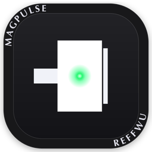
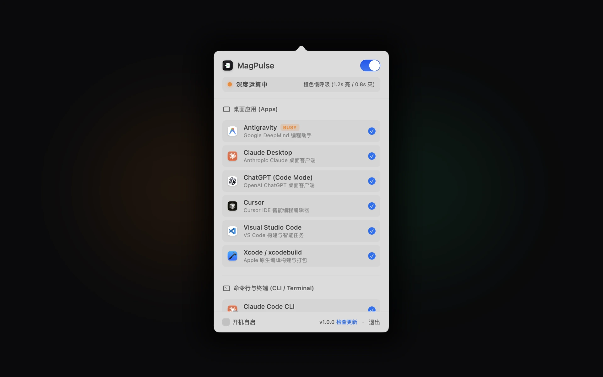

MagPulse
Physical MagSafe light pulse for your Mac's AI agents.
Map thinking, waiting and completion across Antigravity, Claude Code, Codex, ChatGPT and Xcode to MacBook physical dual-color LED pulses.
Free · macOS 14 or later · Signed and notarized by Apple

Physical Hardware Pulse
Glance at the left edge of your Mac without switching windows. Amber breathing while computing, emerald green on done, amber pulse on user permission required.
Apps & CLI Unified
Seamlessly monitors both desktop clients (Antigravity, ChatGPT, Claude, Cursor) and terminal commands (Claude Code, Codex) with sub-second accuracy.
Native & Strictly Local
Drives Apple SMC hardware directly. Reads local activity logs only. Zero cloud dependency, zero data leaves your Mac.
Requires a MacBook with MagSafe 3 (Apple Silicon) and macOS 14 or later.